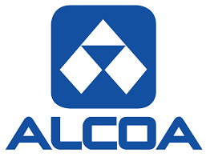
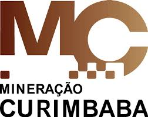

<!DOCTYPE html>
<html lang="pt-br">
<head>
    <meta charset="UTF-8">
    <title>Poços de Caldas | Industrias </title>
    <link rel= "stylesheet" type="text/css" href="formatacao.css">
    
</html>
</head>

<body>

    
    <div class="menu">

        <a href="index.html">
            <h1 class="meio">
                Poços de Caldas
            </h1>
        </a>
    
        <div id="nav">
            <ul>
                <li> <a href="Historia.html"> História </a> </li>
                <li> <a href="Cassinos.html"> Cassinos</a> </li>
                <li> <a href="PontosTuristicos.html"> Pontos Turísticos </a></li>
                <li> <a href="Industrias.html"> Indústrias</a> </li>
                <li> <a href="Geografia.html"> Geografia</a> </li>
                <li> <a href="Eventos.html"> Eventos</a> </li>
                <li> <a href="Curiosidades.html"> Curiosidades </a></li>
                <li> <a href="Fotos.html"> Fotos</a></li>
            </ul>
       </div>

    </div>
   
        <div class="container">

        <h1>
            Indústrias
        </h1>

		<h2>
            <b>Alcoa</b>
           
			<br>
			<table width='100%'>
				<tr>
					<td style="padding-right: 15px;vertical-align: top;">
						<h3>
                            No Brasil desde 1965, dedicada ao desenvolvimento compartilhado e sustentável, 
                            a Alcoa trabalha em diversos elos da cadeia produtiva de alumínio desde a mineração da bauxita, 
                            ao refino da alumina, produção de lingotes e pó de alumínio, produzido apenas no Brasil, entre todas as 
                            unidades Alcoa do mundo.
                            No país possui três unidades produtivas, em Poços de Caldas (MG), São Luís (MA) e Juruti (PA).
                
                            A Planta de Poços de Caldas (MG), fundada em 1965, foi a primeira unidade da Alcoa no Brasil, e
                            começou suas atividades em 1970, destacando-se por ser uma empresa conhecida mundialmente pela excelência de
                            seus processos e produtos além de estar em uma cidade aconchegante, com excelente IDH e próxima a
                            grandes centros, como Campinas e São Paulo, e de faculdades de qualidade.
                            Uma empresa que conta com as redes  AWN (Alcoa’s Women Network
                            – Rede de Mulheres Alcoa) e Eagle (Employees at Alcoa Gay and Lesbian Equality), a fim de promover
                            diversidade e inclusão em um ambiente dinâmico e acolhedor, a fim de alcançar o completo potencial
                            humano e profissional.
                            Em 2018, a Alcoa Poços de Caldas injetou R$18.5 milhões localmente, no estado e no país através do
                            pagamento de impostos:
                            o Municipal: R$3.9 milhões
                            o Estadual: R$4.9 milhões
                            o Federal: R$9.6 milhões.
						</h3>
					</td>
					<td width=20%">
						
					</td>
				</tr>
			</table>
        </h2>

        <h2>
            <b>Danone</b>
           
			<br>
			<table width='100%'>
				<tr>
					<td style="padding-right: 15px;vertical-align: top;">
						<h3>   
                            A empresa foi fundada em 1919 por Isaac Carasso em Barcelona como uma pequena fábrica de 
                            produção de iogurte. O grupo Danone é conhecido pelos seus produtos lácteos, especialmente pelos iogurtes. 
                            Está presente em mais de 120 países, contando em 2009 com 92.209 mil colaboradores, sendo o terceiro maior grupo 
                            alimentício da Europa, o sétimo maior fabricante de alimentos do mundo, e o primeiro em países como a França,
                            Espanha e Itália.
                            A Danone iniciou suas atividades no Brasil em Poços de Caldas (MG) no ano de 1970, com o lançamento do primeiro
                            iogurte com polpa de frutas, que foi sucesso de vendas no país. Apenas nove meses após o lançamento, a produção
                            de iogurtes aumentou de 6 mil para 24 mil potes por hora.
						</h3> 
					</td>
					<td width=20%">
						
					</td>
				</tr>
			</table>
        </h2>

        <h2>
            <b>Ferrero</b>
           
			<br>
			<table width='100%'>
				<tr>
					<td style="padding-right: 15px;vertical-align: top;">
						<h3>   O Grupo Ferrero nasceu da paixão de uma família italiana por conceber ideias inovadoras e transformá-las 
                            em deliciosos produtos. Começou suas atividades na cidade de Alba, na Itália, em 1946, 
                            e transformou-se hoje no quarto maior produtor global de doces e chocolates. 
                            O grupo está presente no Brasil desde 1994, quando introduziu o Kinder Ovo. Em julho de 1997, a 
                            Ferrero iniciou a produção no Brasil, em Poços de Caldas, que atende o mercado interno e países como 
                            Alemanha, Argentina, Canadá, México, França, Itália, Equador, Rússia e Estados Unidos.
						</h3> 
					</td>
					<td width=20%">
						
					</td>
				</tr>
			</table>
        </h2>

        <h2>
            <b>Mineiração Curimbaba</b>
           
			<br>
			<table width='100%'>
				<tr>
					<td style="padding-right: 15px;vertical-align: top;">
						<h3>
                            Criada por Benedito Moreira Curimbaba, que através de uma visão pioneira investiu 
                            em alguns depósitos de bauxita e desenvolveu a utilização das rochas potássicas como adubo, em 1950 criou a 
                            empresa Benedito Moreira Curimbaba em Poços de Caldas. Empresa esta que promove minerais industriais, fertilizantes
                             e serviços de alta qualidade com o aproveitamento eficaz de suas jazidas e integração vertical de seus processos,
                              de modo a  garantir o fornecimento de seus produtos e serviços por décadas.
                            Atualmente a Mineração Curimbaba e suas associadas no Brasil empregam mais de 2.000 funcionários, 
                            gerando pelo menos 5.000 empregos indiretos no país. Com uma capacidade produtiva de 375 mil toneladas ao 
                            ano de bauxitas sinterizadas, bauxitas ativadas, argilas refratárias sinterizadas, propantes, atende inúmeros 
                            segmentos industriais e comerciais, destacando-se a indústria de óleo e gás, a petroquímica, jateamento de 
                            superfícies, fluxo cerâmico para solda elétrica, refratários, abrasivos, tratamento de óleos minerais e biodiesel, 
                            microfusão e fundição. A maior parte desse volume é exportada para os Estados Unidos, Europa e América do Sul.
						</h3>
					</td>
					<td width=20%">
						
					</td>
				</tr>
			</table>
        </h2>

       

      
       

    


        </div>
</body>